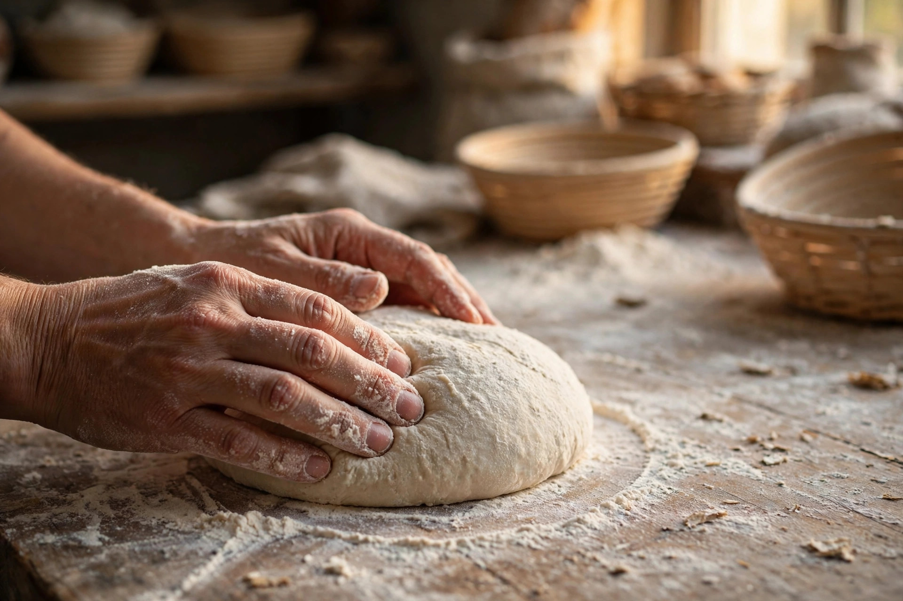

Our story
A January bake
that stuck.
In January 2026, a Wolfeboro kitchen started turning out loaves. Word traveled the way it does in a lake town — neighbor to neighbor — and the orders kept coming.
There's no storefront. Orders go through a Facebook page and a simple order form, and the bread gets picked up around Wolfeboro. It's the oldest kind of bakery model: bake well, tell people, repeat.
What we know is what the town knows — small batches, weekly bakes, and loaves worth planning around. Everything else on this page, the baker will tell you themselves.
- Baking sinceJanuary 2026 — Wolfeboro, New Hampshire
- How to orderOrder form or Facebook message — see how ordering works
- PickupWolfeboro, NH — spot confirmed when you order
- Follow alongThe bakery's Facebook page
The real story, from the baker. This demo was built from public posts — the baker's own words, photos, and history replace this page on launch. We'd rather leave a gap than invent one.
